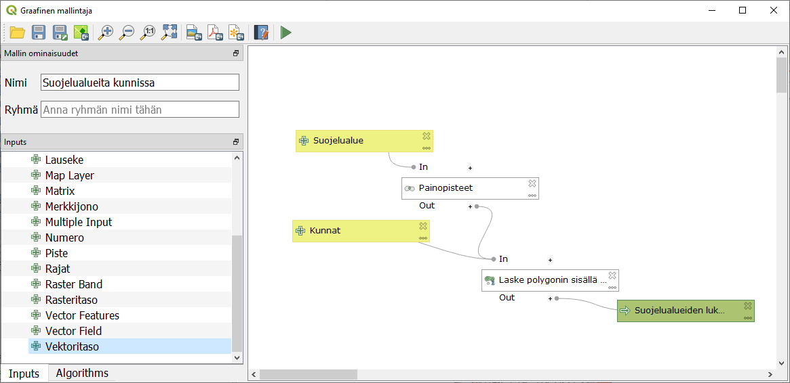
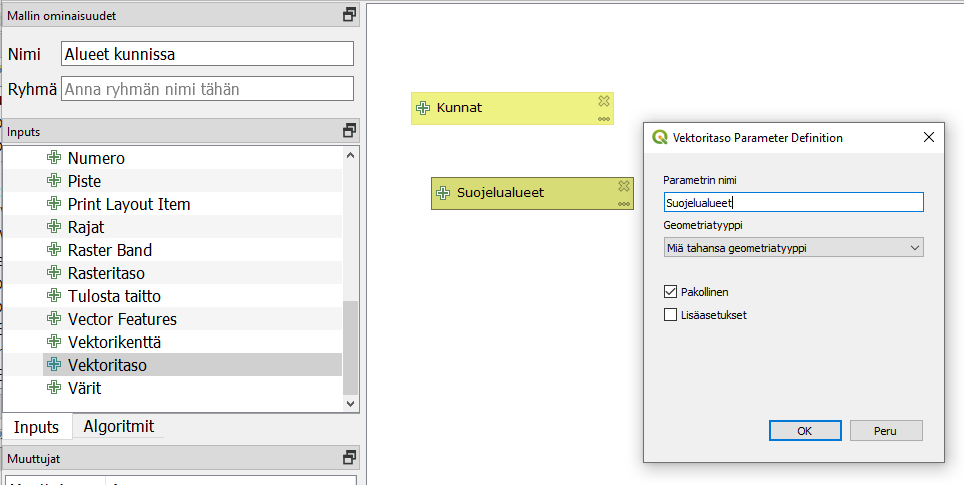
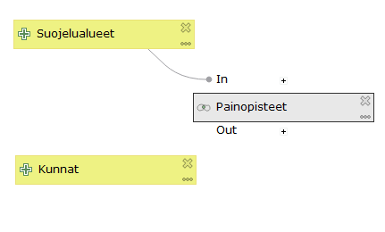
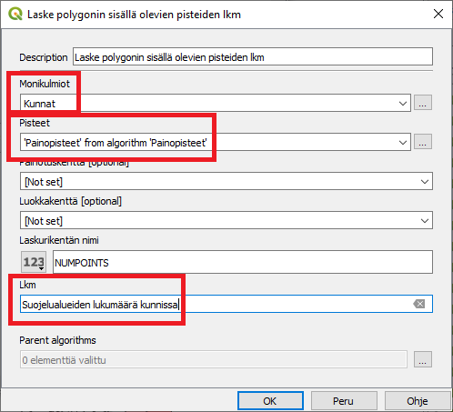
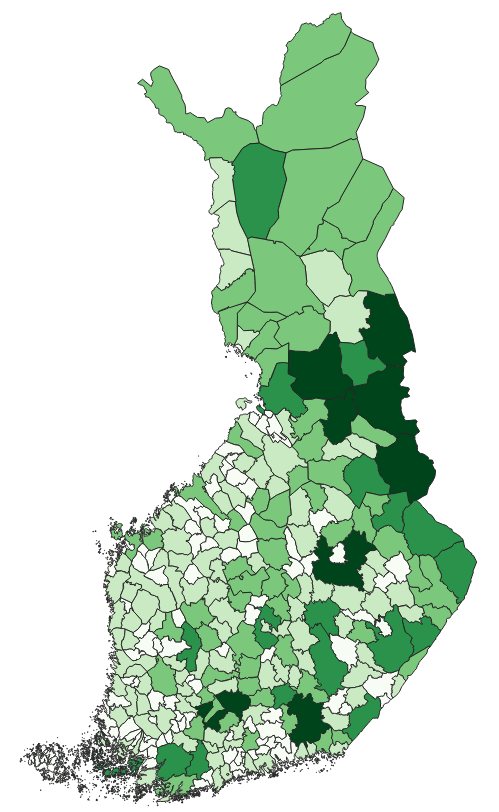
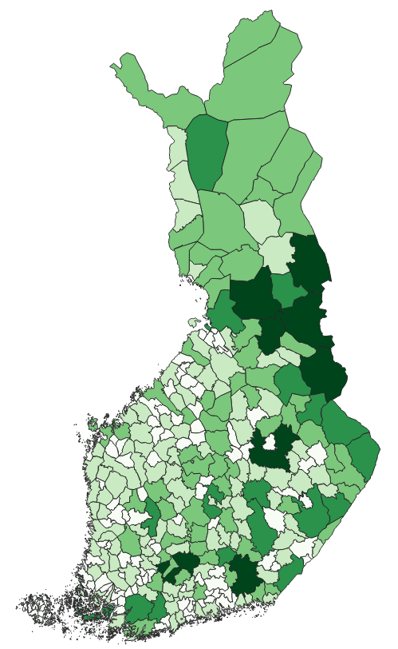

5 Harjoitus 4: Graafinen mallintaja
Harjoituksen sisältö
Harjoituksessa tutustutaan graafiseen mallintajaan. Mallintajalla laaditaan prosessi ja se tallennetaan myöhempää käyttöä varten.
Harjoituksen tavoite
Koulutettava oppii laatimaan monivaiheisen analyysiprosessin graafisen mallintajan avulla ja oppii käyttämään aiemmin ladattuja prosessimalleja.
Arvioitu kesto
30 minuuttia.
5.1 Valmistautuminen
Avaa uusi QGIS-projekti (Projekti > Uusi) ja tallenna se nimellä “QGIS-harjoitus 4”. Avaa projektiisi kurssihakemistosta aineistot
HallintoAlue.shp
SuojeluAlue.shp
5.2 Graafisen mallintajan toiminnot
Graafisella mallintajalla voit automatisoida ja tallentaa usein toistuvia, monivaiheisia analyysiprosesseja. Prosessin voi jakaa muille käyttäjille, ja sitä käytettäessä valitaan lähtöaineistot aina uudelleen. Prosessinmallintaja avataan yläpalkin valikosta Prosessointi > Graafinen mallintaja…

Aukeavassa ikkunassa on vasemman reunan paneelissa kaksi välilehteä: Inputs ja Algoritmit. Näistä valitaan prosessin lähtötiedot ja työkalut, ja ne viedään kaaviomaisen esityksen laatikoiksi ikkunaan raahaamalla tai tuplaklikkaamalla.

5.3 Prosessin laatiminen ja testaus
Anna ensimmäiseksi prosessillesi nimi, esimerkiksi “Suojelualueet kunnissa”. Valitse Inputs-välilehdeltä Vektoritaso ja anna sille nimeksi Kunnat. Aseta tason geometriatyypiksi Monikulmio ja ruksi Pakollinen. Lisää toinenkin vektoritaso, anna sille nimeksi Suojelualueet, geometriatyypiksi Monikulmio ja ruksi Pakollinen.

Siirry nyt Algoritmit-välilehdelle. Etsi työkalu Painopisteet, lisää se malliin ja anna sille syötetasoksi Suojelualueet. Huomaa, että voit siirrellä Input- ja Algoritmilaatikoita ja järjestää ne siistiksi prosessiksi.

Lisää seuraava työkalu: etsi algoritmi Laske polygonin sisällä olevien pisteiden lkm ja anna sille lähtötasoiksi Kunnat (alueet) sekä äsken laskettu Painopisteet. Anna lisäksi tulostason nimi.

Nyt mallisi määrittää suojelualueiden painopisteet, laskee kuinka monta pistettä kunkin kunnan sisällä on, ja luo uuden aluemaisen tulostason kunnista, joka sisältää tiedon suojelualueiden lukumäärästä.
Testaa malliasi klikkaamalla Suorita malli -painiketta  . Käynnistyvä prosessi kysyy lähtöaineistoja: valitse Kunnat-tasoksi HallintoAlue ja Suojelualueet-tasoksi SuojeluAlue. Nämä ovat valmiiksi avattuina projektissasi. Kun klikkaat Suorita, laatimasi prosessi käynnistyy ja tulostiedosto ilmestyy tasoluetteloon. Tallenna toimiva prosessi
. Käynnistyvä prosessi kysyy lähtöaineistoja: valitse Kunnat-tasoksi HallintoAlue ja Suojelualueet-tasoksi SuojeluAlue. Nämä ovat valmiiksi avattuina projektissasi. Kun klikkaat Suorita, laatimasi prosessi käynnistyy ja tulostiedosto ilmestyy tasoluetteloon. Tallenna toimiva prosessi  -painikkeella graafisen mallintajan ikkunassa. Tallenna myös QGIS-projektisi.
-painikkeella graafisen mallintajan ikkunassa. Tallenna myös QGIS-projektisi.
5.4 Tallennetun prosessin käyttöönotto
Avaa uusi, tyhjä QGIS-projekti. Löydät laatimasi prosessin Prosessointityökalut-paneelista omalta välilehdeltään.

Avaa äsken luomasi malli ja käynnistä se -painikkeella. Valitse nyt lähtöaineistot  -kohdasta, koska projektissa ei ole mitään tasoja avoinna. Valitse kunnat-aineistoksi tällä kertaa kurssihakemistosta Kunta1000k_2017.shp ja suojelualueet-aineistoksi NaturaKohde_ma.shp. Klikkaa Suorita.
-kohdasta, koska projektissa ei ole mitään tasoja avoinna. Valitse kunnat-aineistoksi tällä kertaa kurssihakemistosta Kunta1000k_2017.shp ja suojelualueet-aineistoksi NaturaKohde_ma.shp. Klikkaa Suorita.
Onnistunut prosessi luo uuden tulostason, jossa kuntageometrioilla on lisätietona kunnan sisällä olevien Natura-alueiden lukumäärä. Lähtötietona olleet aineistot eivät avaudu QGISiin lainkaan.
Tätä prosessia voi siis käyttää minkä tahansa aluemaisten kohteiden painopisteiden laskurina toisten alueiden sisällä. Annoimme tässä harjoituksessa lähtötiedoille melko yksiselitteiset nimet, mutta ne voi myös nimetä yleisemminkin, esim. “rajaavat alueet” ja “sisältyvät alueet”.
Kun olet valmis, tallenna projektitiedosto kurssihakemistoon pikanäppäimellä CTRL + T tai päävalikosta Projekti > Tallenna.
Psst! Koulutuksen jälkeen saat henkilökohtaista tukea Gispon tukipalvelusta. Lähetä kysymyksesi tai kommenttisi osoitteeseen tuki@gispo.fi!